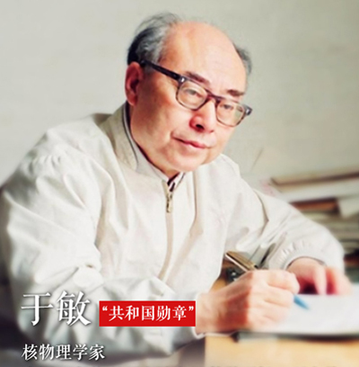

”共和国勋章”获得者
-

钟南山：临危受命 国士担当
钟南山，男，汉族，中共党员，1936年10月生，福建厦门人， 广州医科大学附属第一医院国家呼吸系统疾病临床医学研究中 心主任，中国工程院院士，第十一、十二届全国人大代表，第八、 九、十届全国政协委员。他长期致力于重大呼吸道传染病及慢性 呼吸系统疾病的研究、预防与治疗，成果丰硕，实绩突出。新冠 肺炎疫情发生后，他敢医敢言，提出存在“人传人”现象，强调严 格防控，领导撰写新冠肺炎诊疗方案，在疫情防控、重症救治、 科研攻关等方面作出杰出贡献。荣获国家科学技术进步奖一等奖 和“全国先进工作者”“改革先锋”等称号。
-

于敏：为国防建设隐姓埋名28载
于敏，男，汉族，中共党员，1926年8月生，2019年1月去世，天津宁河人，中国工程物理研究院高级科学顾问、研究员，中国科学院院士。他是我国著名核物理学家，长期领导并参加核武器的理论研究和设计，填补了我国原子核理论的空白，为氢弹突破作出卓越贡献。荣获“两弹一星”功勋奖章、国家最高科学技术奖和“全国劳动模范”“改革先锋”等称号。
-

申纪兰：“勿忘人民、勿忘劳动”
申纪兰，女，汉族，中共党员，1929年12月生，山西平顺人，山西省平顺县西沟村党总支副书记，第一届至第十三届全国人大代表。她积极维护新中国妇女劳动权利，倡导并推动“男女同工同酬”写入宪法。改革开放以来，她勇于改革，大胆创新，为发展农业和农村集体经济，推动老区经济建设和老区人民脱贫攻坚作出巨大贡献。荣获“全国劳动模范”“全国优秀共产党员”“全国脱贫攻坚‘奋进奖’”“改革先锋”等称号
-

孙家栋：“两弹一星”元勋
孙家栋（1929——），辽宁瓦房店人。1956年8月加入中国共产党。中国航天科技集团有限公司高级技术顾问，原航空航天工业部副部长，中国科学院院士。他是我国人造卫星技术和深空探测技术的开拓者之一，从事航天工作60年来，主持研制了45颗卫星。担任我国北斗导航系统第一代、第二代工程总设计师，月球探测一期工程的总设计师，树立了我国航天史上新的里程碑。荣获“全国优秀共产党员”称号和“两弹一星”功勋奖章、国家最高科学技术奖、国家科学技术进步奖特等奖。
-

李延年：荣誉属于所有烈士
李延年，男，汉族，中共党员，1928年11月生，河北昌黎人，原54251部队副政治委员。1945年参加革命，先后参加解放战争、湘西剿匪、抗美援朝战争、对越自卫反击战等战役战斗20多次，是为建立新中国、保卫新中国作出重大贡献的战斗英雄。离休后，他初心不改、斗志不减、本色不变，积极弘扬革命优良传统，充分展现了一名老革命军人、老战斗英雄的光辉形象。荣立特等功一次，被志愿军总部授予“一级英雄”称号，荣获解放奖章和胜利功勋荣誉章。
-
张富清：“战斗英雄”
今年95岁的老党员张富清是原西北野战军359旅718团2营6连战士，在解放战争的枪林弹雨中九死一生，先后荣立一等功三次、二等功一次，被西北野战军记“特等功”，两次获得“战斗英雄”荣誉称号。1955年，张富清退役转业，主动选择到湖北省最偏远的来凤县工作，为贫困山区奉献一生。60多年来，张富清刻意尘封功绩，连儿女也不知情。2018年底，在退役军人信息采集中，张富清的事迹被发现，这段英雄往事重现在人们面前。
-
袁隆平：杂交水稻之父
袁隆平，男，汉族，无党派人士，1930年9月生，江西德安人，国家杂交水稻工程技术研究中心、湖南杂交水稻研究中心原主任，湖南省政协原副主席，中国工程院院士，第五届全国人大代表，第六、七、八、九、十、十一、十二届全国政协委员。他一生致力于杂交水稻技术的研究、应用与推广，发明“三系法”籼型杂交水稻，成功研究出“两系法”杂交水稻，创建了超级杂交稻技术体系，为我国粮食安全、农业科学发展和世界粮食供给作出杰出贡献。荣获国家最高科学技术奖、国家科学技术进步奖特等奖和“改革先锋”等称号。
-

黄旭华：我的一生属于核潜艇属于祖国
黄旭华，男，汉族，中共党员，1926年3月生，广东揭阳人，中国船舶重工集团719所名誉所长、原所长，中国工程院院士。他隐姓埋名几十年，为我国核潜艇事业奉献了毕生精力，为核潜艇研制和跨越式发展作出卓越贡献。在某次深潜试验中，他置个人安危于不顾，作为总设计师亲自随产品深潜到极限。荣获国家科学技术进步奖特等奖和“全国先进工作者”等称号。
-
屠呦呦：一辈子专注青蒿素
屠呦呦，女，汉族，中共党员，1930年12月生，浙江宁波人，中国中医科学院中药研究所青蒿素研究中心主任。她60多年致力于中医药研究实践，带领团队攻坚克难，研究发现了青蒿素，解决了抗疟治疗失效难题，为中医药科技创新和人类健康事业作出巨大贡献。荣获国家最高科学技术奖、诺贝尔生理学或医学奖和“全国优秀共产党员”“全国先进工作者”“改革先锋”等称号。
1
2
3
4
5
跳转到第页